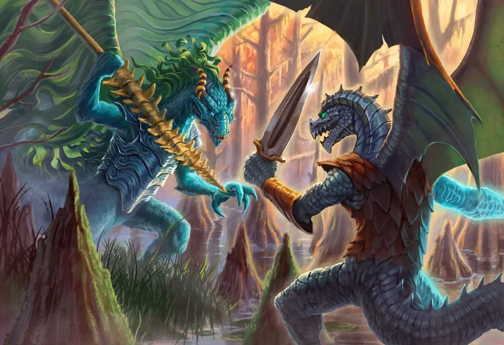
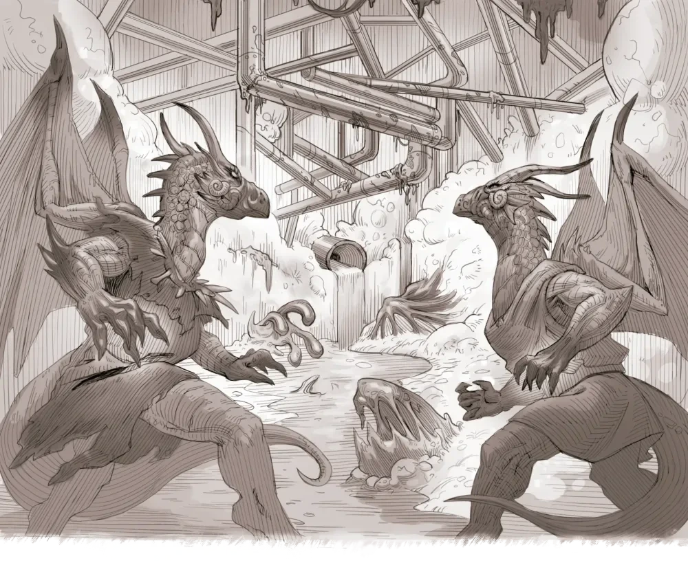
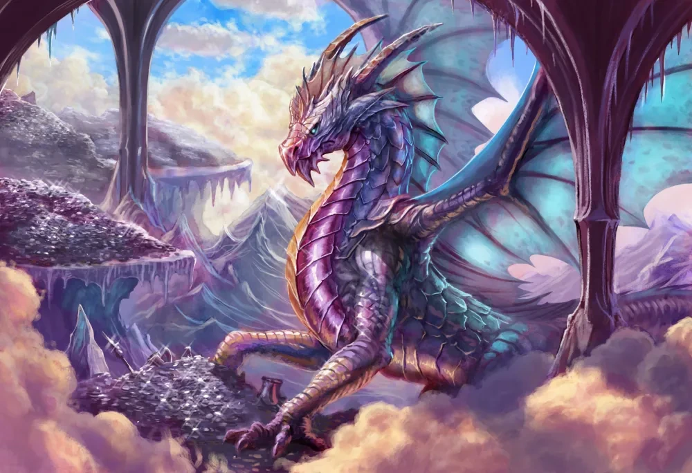
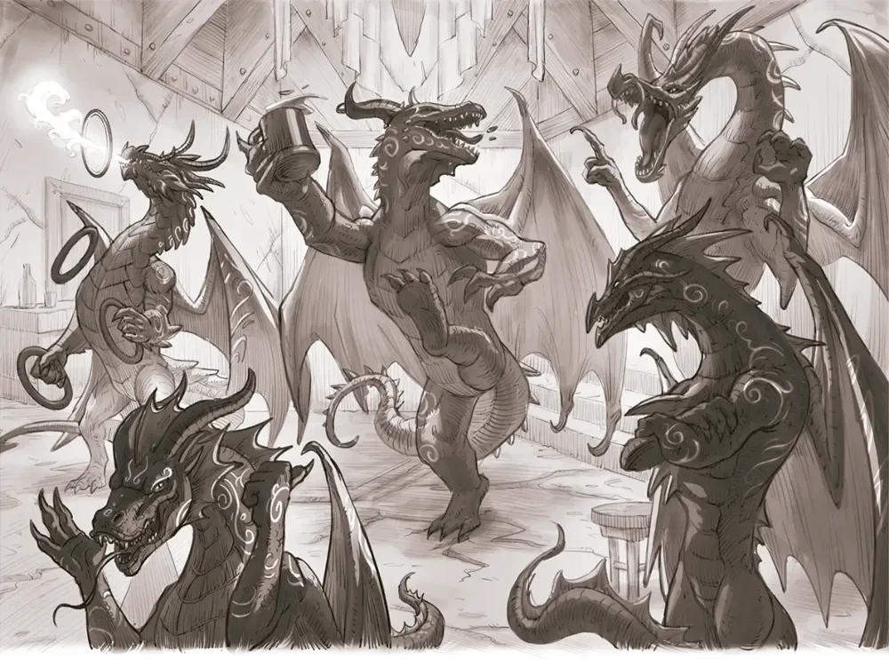

流变龙维克西米莉亚的炼金地牢实在太过凶险，就连你这位无畏的作者也不敢贸然亲身犯险。单是关于那地方的种种传闻，就已足够令巨龙全身鳞片发寒。
不过我深知，好奇而又眼光独到的读者啊，你必然需要比道听途说更加翔实可靠的关于此地的情报。
既然我无法亲自前去搜集资料，那就必须找一位真正深入过其中、并从地牢恐怖中生还的亲历者聊聊。结果，我在一个意想不到的地方找到了一位可靠线人――一头名叫布拉纳克西万克的传统派义体龙。
就在不久前，布拉纳克西万克曾与一头厄运龙结伴深入过那座地牢。那头厄运龙此前饱受可怖幻象折磨，预见到要么会有成群结队的低阶怪物自炼金深渊中涌出，要么便是地牢里盘踞的那头恐怖流变龙（无论它真是异变扭曲后的维克西米莉亚本人，还是某种畸形怪诞的造物）将破笼而出，席卷周边乡野，将巨龙巢穴与凡人聚落一并化为废墟。
不祥凶兆驱使着那头厄运龙四处寻觅盟友，而布拉纳克西万克答应同行却怀揣着自己的隐秘企图。在出发探险前的那段日子里，他手头用于防腐实验、遏制自身血肉坏死的几种关键药材已日渐枯竭。他意识到，这是因为随着同一种疗程一次次重复，药效正变得越来越差――很可能是残留体内的死灵能量对现有疗法产生了更强的抗性。这意味着他要么必须搜集远超以往分量的同类药材，要么就得另寻全新物质，研发出一套能够保存躯体的革新疗法。
无论打算走哪一条路，布拉纳克西万克都意识到回应这头厄运龙的迫切求助对自己大有裨益：在那座传说中的炼金地牢里，昔日曾存放着龙族最负盛名的炼金大师毕生心血，其中必定留存着海量珍稀药材，乃至尚未为人所知的化合物与炼金器械，正静候来者发掘。至少，在强烈求生欲的驱使下，他是这样说服自己的。平心而论，他的判断倒也未必有错；但事后他才幡然醒悟，无论如何自己恐怕都犯下了一个弥天大错。即便是在当年正常营业的时期，维克西米莉亚也绝不会轻易交出自己的秘密；而如今的地牢更是彻头彻尾沦为了一片炼金地狱，足以令最悍勇无畏的巨龙吓得鳞色惨白。
抵达入口之后，最先引起布拉纳克西万克注意的便是那股气味。刺鼻的腐蚀性毒烟从半融化的金属门框内翻涌而出，门后通道一路向下直通幽暗深渊。昔日地牢入口处曾挂有一块告示牌，上面写着供维克西米莉亚潜在客户阅览的须知；但早在整座地牢彻底堕入混乱之前，维克西米莉亚便已多年不再更新维护它了。
这倒也在意料之中，并未让布拉纳克西万克以及哄劝他踏上这场小型探险的厄运龙打退堂鼓。随着他们小心翼翼地潜入下方黑暗，空气变得愈发辛辣呛人且潮湿闷热。布拉纳克西万克取出了两副他事先专为两头巨龙设计的魔法呼吸面罩以作防护。
然而不幸的是，恶劣的空气远非他们在地下遭遇的最致命威胁。杂乱无章的管线纵横交错，织成了一座庞大无匹的迷宫，其规模早已远远超出了维克西米莉亚昔日巢穴与实验室的原先范围。绝大部分区域的地面都淹没在危险的炼金诱变剂与其他化学浆液汇成的泥沼之中，其中一些甚至已诞生出生命，化作了形形色色的泥怪。两头巨龙虽然能够贴着地面低空飞行以避开险恶地形，但在低矮顶棚的压制下，他们根本无法躲开所有泥怪，更不用说在四处巡逻的炼金构装体了。
布拉纳克西万克向我再三保证，那座地牢曾不止一次……以某种方式自行发生了位移。他弄不清背后的具体机关原理，但地牢的平面结构就这么凭空改变了：原本畅通的走廊骤然竖起高墙，截断了他们安全撤离的退路。那究竟是某种怪异的化学反应，还是精心设计的机械机关？它是随着时间推移自发运转，还是针对闯入禁地的不速之客所作出的直接反击？
就我个人而言，既然这座地牢映照着一位天才流变龙扭曲而悲惨的末路，那么它会发生神秘莫测的形变绝非巧合。在那场催生出地牢如今面貌的悲剧事故发生之前，维克西米莉亚的居所便已开始折射出她晚年愈发癫狂失常的身心状态；而倘若她果真化作了旁人惊鸿一瞥过的那头满身肉瘤的骇人怪物、至今仍徘徊在那些厅堂之间，那么这座地牢或许仍在不断映射着她愈发错乱无常的存在。
出于好奇，我询问布拉纳克西万克是否亲眼见到了地牢中最强大的那位盘踞者；如果见到了，他认为那究竟是昔日维克西米莉亚在恐怖异变后残留的躯壳，还是从地牢那口口恐怖炼金大釜中冒泡诞生出的全新造物。
他的回答与其说满足了我的好奇心，不如说更清楚地解释了他仓皇逃离地牢时的精神状态。起初，布拉纳克西万克与同伴还以为自己鸿运当头：他们不仅找到并关闭了某种被厄运龙认定与潜在浩劫息息相关的装置，布拉纳克西万克甚至还成功寻获了数种他前所未见的试剂――他觉得那或许正是自己实现疗法突破梦寐以求的关键材料。
不幸的是，恰在此时，甬道的移形换位骤然剧烈了数倍。我认为布拉纳克西万克纯粹是在事后诸葛亮，试图为突如其来的变故强行找个解释；但他却赌咒发誓说，整座地牢必定是故意用虚假的安全感引诱他们深入腹地，再趁他们最志得意满、放松警惕之际骤然发难。就我个人听来，这不过是一场再典型不过的地牢遇险记――一切原本顺风顺水，直到突然急转直下。
且不论炼金地牢究竟有没有能力蓄意策划这般阴谋，退路已被彻底堵死却是铁一般的事实。绝望之下，布拉纳克西万克与同伴穿过密布管线的隧道与回廊，在重重迷宫与陷阱间亡命狂奔。他们不再停下脚步与泥怪及构装体缠斗，而是仰仗飞行速度将追兵远远甩在身后。诚然，泥怪与构装体的速度根本无法与巨龙相提并论；但这也意味着每当他们因撞上死胡同而不得不折返时，都必须硬生生冲破身后越聚越多的怪物狂潮。原本他们二龙或许仍有机会双双生还，偏偏地牢中最臭名昭著的那位主宰同样是一头巨龙，速度完全足以追上他们。走投无路之下，两头巨龙只得分头逃命，而地牢中的那头恐怖怪物最终选择去追猎厄运龙。就这样，布拉纳克西万克侥幸捡回了一条命。极具讽刺意味的是，紧随其后涌出地牢的怪物浪潮，反倒让那头厄运龙的末日预言完成了自我应验。
――永光贤者卡利赞德雷克斯
本章收录了丰富的异类龙资料卡，可供GM在战役中引入更多难以预测的变数。在长期进行的战役里，异类龙能够出色地胜任形形色色的角色――从强敌到盟友，从庇护主到劲敌，乃至从挚爱亲族到贯穿整个战役的幕后大反派。下文将依次呈现每一种异类龙血统，并完整提供雏龙、青年、成年、远古及太古龙的资料数据。首先登场的是义体龙，随后依次为厄运龙、流变龙、相位龙，最后则是魔泉龙。

| 龙种分类 | 怪物数据卡 |
|---|---|
| 义体龙 Bionic Dragon | 义体龙雏龙、青年义体龙、青年义体龙（施法者）、成年义体龙、成年义体龙（施法者）、远古义体龙、远古义体龙（施法者）、太古义体龙、太古义体龙（施法者） |
| 厄运龙 Doom Dragon | 厄运龙雏龙、青年厄运龙、青年厄运龙（施法者）、成年厄运龙、成年厄运龙（施法者）、远古厄运龙、远古厄运龙（施法者）、太古厄运龙、太古厄运龙（施法者） |
| 流变龙 Metamorphic Dragon | 流变龙雏龙、青年流变龙、青年流变龙（施法者）、成年流变龙、成年流变龙（施法者）、远古流变龙、远古流变龙（施法者）、太古流变龙、太古流变龙（施法者） |
| 相位龙 Phase Dragon | 相位龙雏龙、青年相位龙、青年相位龙（施法者）、成年相位龙、成年相位龙（施法者）、远古相位龙、远古相位龙（施法者）、太古相位龙、太古相位龙（施法者） |
| 魔泉龙 Wellspring Dragon | 魔泉龙雏龙、青年魔泉龙、青年魔泉龙（施法者）、成年魔泉龙、成年魔泉龙（施法者）、远古魔泉龙、远古魔泉龙（施法者）、太古魔泉龙、太古魔泉龙（施法者） |

亲爱的读者，绝大多数太古龙最终都会变得相当自命不凡，这几乎是一种必然的归宿。可是，当它们在才智、力量与魔力威能上确实超越了几乎每一个曾与自己照面的存在时，这还能算作狂妄自大吗？这种“超然物外”的气度，往往与它们近乎偏执的周密防范相辅相成――也正是这份谨慎，才让一条典型的太古龙得以安然活到如此受人景仰的漫长高龄，而不至于惨遭横死。
金属龙――正如它们自己总爱不厌其烦地提醒我们的那样――向来被奉为“美德的楷模”。它们极其热衷于没完没了地向我们其余巨龙强调这一特质，而且早在它们晋升太古龙之前的漫长岁月里，就已经学会并养成了这番习气。当它们在数百年乃至数千年的时光里日复一日地践行这一习惯后，真可谓熟能生巧――又或者说，积习难改？当然，并非所有金属龙都是这副做派，我们尊贵的银龙霸主就更是绝无半点此等习气。
在所有金属龙之中，金龙尤以无时无刻不在彰显优越感而闻名遐迩；太古金龙那近乎无穷无尽的自吹自擂，甚至足以与星界龙、日曜龙以及其他虚荣傲慢的化身一较高下。
不过，无论这是真正的傲慢，还是单纯源于漫长而辉煌的一生所赢得的坦荡自豪，几乎无人能够否认太古金属龙在周身营造出的那股神圣威仪。当弱小生物面对一条太古金属龙时，心中往往会油然而生一种敬畏与惊叹之情，恰似面对神明法驾般的宗教肃穆感。踏入太古金属龙的巢穴，几乎会让人觉得自己是在擅闯神圣不可侵犯的净土，仿佛此举必将招致神罚般的雷霆义愤。
然而，尽管太古金属龙千方百计地蓄养出这身如同实质披风般笼罩周身的庄严气派，太古狂野龙所展现出的风貌却与之截然相反。两者之间鲜明而强烈的反差近乎滑稽可笑――尤其是当这种做派令太古金属龙恼火不已的时候，而狂野龙偏偏对此乐此不疲。
诚然，世间性情跳脱古怪的巨龙绝非只有狂野龙一家。仙灵龙家族中的皮克精龙、好几种异类龙，甚至就连我正在拿来作对比的金属龙家族内部的赤铜龙，全都拥有极为强烈的幽默感……在某些情况下，这份幽默感或许还强烈得过了头。
但与上述这些巨龙相比，太古狂野龙身上就是有一种截然不同的特质。当然，世上没有两条完全相同的太古龙，况且每一种特定传承下的太古龙数量也远未多到能让我当作海量数据样本来统计分析的地步。不过总体而言，太古赤铜龙往往喜欢将自己笼罩在一层神秘莫测的面纱之中，宛如神话传说里的诡计之神；这使它们在尽情捉弄胡闹的同时，仍能保有一份深不可测的威严感。无独有偶，太古黄铜龙固然少不了滔滔不绝的话痨本色，却也依旧带着那份沉稳凝重的威仪。
反观太古狂野龙，它们丝毫不怕放飞自我、四处厮混，甚至做出种种在旁人眼中完全有失“巨龙体统”的举动。许多狂野龙似乎坚信，主动卸下神秘与威严的光环，反而会诱使敌人严重低估自己，从而在遭遇任何袭击时都能更加游刃有余地全身而退。
自然，太古金属龙认为自身高不可攀的凛然威势才是最强有力的威慑手段，能从一开始就免去不必要的挑衅，将绝大多数威胁拒之门外。
而太古狂野龙则觉得，最好让对手永远摸不透虚实、时刻处于进退失据的失衡状态，哪怕这意味着不得不亲手打发一些不知死活的宵小之辈。这种看似不按常理出牌的行事作风往往令狂野龙占尽便宜，因为敌人很容易放松警惕，严重低估它们真正的实力。与此同时，金属龙却觉得这等伎俩简直愚不可及。
在金属龙看来，哪怕是弱小的对手也有可能侥幸得手、造成无法挽回的损失，认识到这一点才是真正的智慧；因此，倒不如直接将宵小吓退以避免冲突――哪怕这意味着那些真正有实力的劲敌在向自己发起挑战前，必定会做好万全准备，甚至是过度准备。
那么，这两种生存策略究竟孰优孰劣呢？作为一名学者与观察者，我不便妄下定论。但这两种截然不同的态度，确实淋漓尽致地体现了这两大巨龙家族的灵魂所在。就我个人而言，我当然十分感激能够更直接地与太古狂野龙打成一片――它们经常举办狂放不羁的盛大派对，而我也时常应邀出席，当然，这完全是出于学术研究的目的。尽管我心里清楚，它们故意透露给我的信息往往淡化了自身的真实能耐，试图诱导我进一步低估它们，但我依然格外珍惜这些与它们近距离交流的机会。毕竟，倘若我将任何误判传递给敏锐的你，再借由你传播给更广泛的受众，那可就正中它们的下怀了。
当你看到一条太古靛青龙看似无忧无虑地开怀痛饮，一条太古朱红龙绘声绘色地吹嘘着荒诞不经的离奇大话，一条太古琥珀龙四处搜集并散播流言蜚语，又或者一条太古丑角龙像宫廷弄臣一样表演着滑稽摔跤与插科打诨时，你很容易在心底对自己说：“这些太古龙跟我以前见过的那些年轻狂野龙也没什么两样嘛。”
一旦你生出这种念头，便已经彻底落入了它们精心编织的圈套。历经数百年乃至数千年的岁月洗礼，它们早已蜕变成了远超你想象极限的存在。它们正是利用这副表象，将你困在过往经验所形成的先入之见里，借此掩藏自身毁天灭地的真正力量。
我坦白承认：当初我头一回领教这种把戏时，也实实在在地着了道。它们当真把鄙人――也就是你忠实的作者――蒙得团团转。不过，尽管它们自始至终未曾露出半点破绽，也从未有一刻脱离伪装的人设，我最终还是看穿了它们的把戏。以此为突破口，我充分调动了自己敏锐的观察力、深邃的思辨力与惊人的记忆力，总算将它们这场瞒天过海之计的全貌彻底揭开。
当然，我也很清楚，如今我将这些剖析付诸笔墨、原原本本地展现在你面前，肯定没法在太古狂野龙当中交到什么朋友。但或许它们会由我而去――因为它们大可算计：倘若置之不理，部分读者自会把我的推论当成某个脱离实际的书呆子凭空臆造的无稽之谈；可一旦它们出手对付我，反而等于向世人坐实了我所言非虚，证明其中确实藏着它们拼命想要掩盖的真相。而这种欲盖弥彰的封口之举，说不定会让真相传播得比单靠我一己之力还要更快、更远。
话说回来，太古金属龙恐怕也未必会喜欢我对它们那套优越感情结的刻画――哪怕有后文这番对比作陪衬。但亲爱的读者，我提笔撰书本就不是为了讨好每一个人，而是为了传达真知，呈献我所理解的事实真相。倘若我们最高贵、最富耐心的巨龙霸主瑞扎尼瓦什因此收到了她那些最年长亲眷寄来的更多恼怒信函，还望她能对我多加海涵。
正如卡利赞德雷克斯在笔记中所言，本附录探讨的是独立于全书其余章节之外的课题，摘自卡利赞德雷克斯的补充研究手稿，并随同主报告一并呈交给了巨龙霸主瑞扎尼瓦什。本篇并未聚焦仙灵龙，而是涵盖了经典色彩龙家族中最古老、最强大的存在――太古色彩龙。其中，太古蓝龙与太古红龙更设有长篇扩充词条，不仅详尽记述了这两类太古龙中的特定传奇个体，还附有专为其量身打造的巢穴地图，非常适合直接用于围绕这些太古龙展开的冒险之中！

| 龙种分类 | 怪物数据卡 |
|---|---|
| 太古黄铜龙 Brass Dragon Great Wyrm | 太古黄铜龙、太古黄铜龙（施法者） |
| 太古青铜龙 Bronze Dragon Great Wyrm | 太古青铜龙、太古青铜龙（施法者） |
| 太古赤铜龙 Copper Dragon Great Wyrm | 太古赤铜龙、太古赤铜龙（施法者） |
| 太古金龙 Gold Dragon Great Wyrm | 太古金龙、太古金龙（施法者） |
| 太古银龙 Silver Dragon Great Wyrm | 太古银龙、太古银龙（施法者） |
| 太古蔚蓝龙 Cerulean Dragon Great Wyrm | 太古蔚蓝龙、太古蔚蓝龙（施法者） |
| 太古靛青龙 Indigo Dragon Great Wyrm | 太古靛青龙、太古靛青龙（施法者） |
| 太古琥珀龙 Amber Dragon Great Wyrm | 太古琥珀龙、太古琥珀龙（施法者） |
| 太古朱红龙 Vermilion Dragon Great Wyrm | 太古朱红龙、太古朱红龙（施法者） |
| 太古丑角龙 Harlequin Dragon Great Wyrm | 太古丑角龙、太古丑角龙（施法者） |